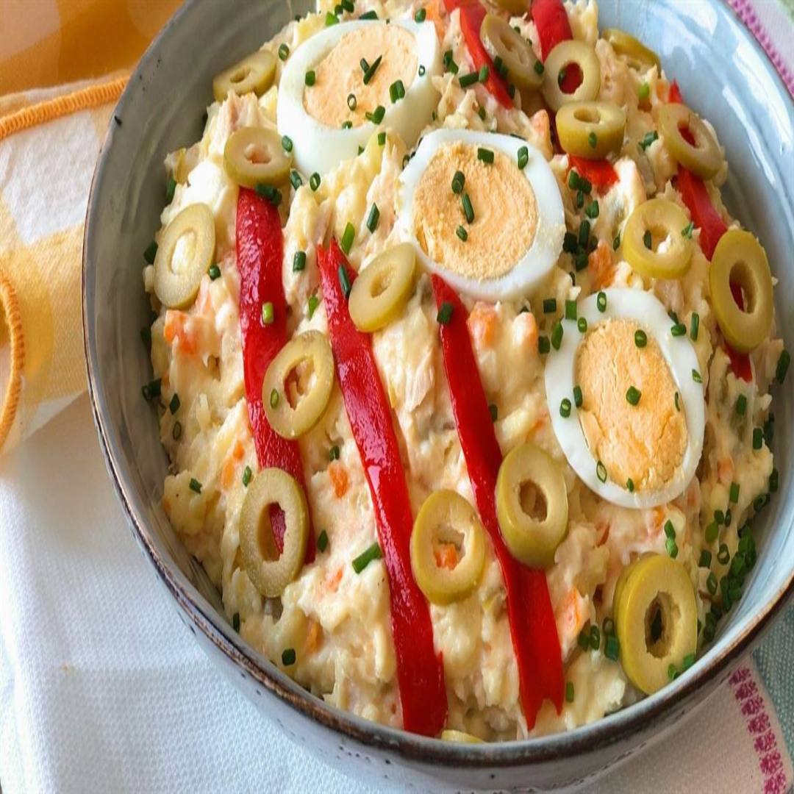

Ensaladilla Rusa
Ingredientes (para 4 personas)
- 4 patatas medianas
- 2 zanahorias
- 1 lata de guisantes (200g, escurridos)
- 1 lata de atún en aceite (150g, escurrido)
- 3 huevos
- 100g de mayonesa (o al gusto)
- 10 aceitunas verdes (opcional, para decorar)
- Sal y pimienta al gusto
- 1 cebolla pequeña (opcional, para más sabor)
Instrucciones
- Lava las patatas y zanahorias. Pélalas y córtalas en cubos pequeños. Cocina las patatas y zanahorias en una olla con agua hirviendo y sal durante 15-20 minutos, hasta que estén tiernas pero no se deshagan. Escúrrelas y deja enfriar.
- En otra olla, cuece los huevos durante 10 minutos. Pásalos por agua fría, pélalos y córtalos en trozos pequeños.
- En un bol grande, mezcla las patatas cocidas, zanahorias, guisantes escurridos, atún desmenuzado y huevos cortados. Si usas cebolla, pícala fina y añádela.
- Incorpora la mayonesa poco a poco, mezclando bien para que todo quede cubierto. Añade sal y pimienta al gusto. Si queda demasiado seco, agrega un poco más de mayonesa.
- Cubre el bol con film transparente y refrigera la ensaladilla durante al menos 1 hora (o toda la noche) para que los sabores se integren.
- Sirve fría, decorada con aceitunas cortadas. ¡Ideal para picnics o como entrante!
Tiempo de preparación: 30 minutos. Tiempo de cocción: 20 minutos. Tiempo de enfriado: 1 hora. Dificultad: Baja (fácil de hacer, sin complicaciones). Consejo: Prepara con antelación; sabe mejor al día siguiente. Ajusta la mayonesa para que no quede demasiado cremosa.